Low-drift and real-time lidar odometry and mapping
Ji Zhang1 Sanjiv Singh1
Received: 25 October 2014 / Accepted: 7 February 2016 / Published online: 18 February 2016
© Springer Science+Business Media New York 2016
Abstract Here we propose a real-time method for low-drift odometry and mapping using range measurements from a 3D laser scanner moving in 6-DOF. The problem is hard because the range measurements are received at different times, and errors in motion estimation (especially without an external reference such as GPS) cause mis-registration ofthe resulting point cloud. To date, coherent 3D maps have been built by off-line batch methods, often using loop closure to correct for drift over time. Our method achieves both low-drift in motion estimation and low-computational complexity. The key idea that makes this level of performance possible is the division of the complex problem of Simultaneous Localization and Mapping, which seeks to optimize a large number of variables simultaneously, into two algorithms. One algorithm performs odometry at a high-frequency but at low fidelity to estimate velocity of the laser scanner. Although not necessary, if an IMU is available, it can provide a motion prior and mitigate for gross, high-frequency motion. A second algorithm runs at an order of magnitude lower frequency for fine matching and registration of the point cloud. Combination of the two algorithms allows map creation in real-time. Our method has been evaluated by indoor and outdoor experiments as well as the KITTI odometry benchmark. The results indicate that the proposed method can achieve accuracy comparable to the state of the art offline, batch methods.
Keywords Ego-motion estimation · Mapping · Continuoustime Lidar
1 Introduction
3D Mapping remains a popular technology. The main issue with laser ranging in which the laser moves has to do with registration of the resulting point cloud. If the only motion is the pointing of a laser beam with known internal kinematics of the lidar from a fixed base, this registration is obtained simply. However, if the sensor base moves, as in many applications of interest, laser point registration has to do with both the internal kinematics and external motion. The second one has to contain knowledge of how the sensor is located and oriented for every range measurement. Since lasers can measure distance up to several hundred thousand times per second, high-rate pose estimation is a significant issue. A common way to solve this problem is to use an independent method of pose estimation (such as with an accurate GPS/INS system) to register the range data into a coherent point cloud in reference to a fixed coordinate frame. When independent measurements relative to a fixed coordinate frame are unavailable, the general technique used is to register points using some sort of odometry estimation, e.g. using combinations of wheel motion, gyros, and by tracking features in range or visual images.
Here we consider the case of creating maps using lowdrift odometry with a mechanically scanned laser ranging device (optionally augmented with low-grade inertial measurements) moving in 6-DOF. A key advantage of only using laser ranging is that it is not sensitive to ambient lighting or optical texture in the scene. New developments in laser scanners have reduced the size and weight of such devices to the level that they can be attached to mobile robots (including flying, walking or rolling) and even to people who move around in an environment to be mapped. Since we seek to push the odometry toward the lowest possible drift in real-time, we don’t consider issues related to loop closure. Indeed, while loop closure could help further cancel the drift, we find that in many practical cases such as mapping a floor of a buildings, loop closure is unnecessary.

Fig. 1 The method aims at motion estimation and mapping using a moving 3D lidar. Since the laser points are received at different times, distortion is present in the point cloud due to motion of the lidar (shown in the left lidar cloud). Our proposed method decomposes the problem by two algorithms running in parallel. An odometry algorithm estimates velocity of the lidar and corrects distortion in the point cloud, then, a mapping algorithm matches and registers the point cloud to create a map. Combination of the two algorithms ensures feasibility of the problem to be solved in real-time
Our method, namely LOAM, achieves both low-drift in motion estimation in 6-DOF and low-computational complexity. The key idea that makes this level of performance possible is the division of the typically complex problem of simultaneous localization and mapping (illustrated in Fig. 1), which seeks to optimize a large number of variables simultaneously, into two algorithms. One algorithm performs odometry at a high-frequency but at low fidelity to estimate velocity of the laser scanner moving through the environment. Although not necessary, if an IMU is available, it can provide a motion prior and help account for gross, high-frequency motion. A second algorithm runs at an order of magnitude lower frequency for fine matching and registration of the point cloud. Specifically, both algorithms extract feature points located on edges and planar surfaces and match the feature points to edge-line segments and planar surface patches, respectively. In the odometry algorithm, correspondences of the feature points are found by ensuring fast computation, while in the mapping algorithm, by ensuring accuracy.
In the method, an easier problem is solved first as online velocity estimation, after which, mapping is conducted as batch optimization to produce high-precision motion estimation and maps. The parallel algorithm structure ensures feasibility of the problem to be solved in real-time. Further, since motion estimation is conducted at a higher frequency, mapping is given plenty of time to enforce accuracy. When staggered to run at an order of magnitude slower than the odometry algorithm, the mapping algorithm incorporates a large number of feature points and uses sufficiently many iterations to converge. The paper makes main contributions as follows,
We propose a software system using dual-layer optimization to online estimate ego-motion and build maps;
We carefully implement geometrical feature detection and matching to meet requirements of the system: feature matching in the odometry algorithm is coarse and fast to ensure high frequency, and is precise and slow in the mapping algorithm to ensure low-drift;
We test the method thoroughly with a large number of datasets covering various types of environments;
We make an honest attempt to present our work to a level of detail allowing readers to re-implement the method.
The rest of this paper is organized as follows. In Sect. 2, we discuss related work and how our work is unique compared to the state of the art. In Sect. 3, we pose the research problem formally. The lidar hardware and software systems are described in Sect. 4. The odometry algorithm is presented with details in Sect. 5, and the mapping algorithm in Sect. 6. Experimental results are shown in Sect. 7. Finally, a discussion and a conclusion are made in Sects. 7 and 8, respectively.
2 Related work
Lidar has become a useful range sensor in robot navigation. For localization and mapping, one way is to perform stop-and-scan to avoid motion distortion in point clouds (Nuchter et al. 2007). Also, when the lidar scanning rate is high compared to its extrinsic motion, motion distortion can be neglectable. In this case, ICP methods (Pomerleau et al. 2013) can be used to match laser returns between different scans. Additionally, a two-step method is proposed to remove the distortion (Hong et al. 2010): an ICP based velocity estimation step is followed by a distortion compensation step, using the computed velocity. A similar technique is also used to compensate for the distortion introduced by a single-axis 3D lidar (Moosmann and Stiller 2011). However, if the scanning motion is relatively slow, motion distortion can be severe. This is especially the case when a 2-axis lidar is used since one axis is typically much slower than the other. Often, other sensors are used to provide velocity measurements, with which, the distortion can be removed. For example, the lidar cloud can be registered by state estimation from visual odometry integrated with an IMU (Scherer et al. 2012). When multiple sensors such as a GPS/INS and wheel encoders are available concurrently, the problem is often solved through Kalman filers or particle filters, building maps in real-time.
If a 2-axis lidar is used without aiding from other sensors, motion estimation and distortion correction become one problem. In Barfoot et al.’s methods, the sensor motion is modeled as constant velocity (Dong and Barfoot 2012; Anderson and Barfoot 2013a) and with Gaussian processes (Tong and Barfoot 2013; Anderson and Barfoot 2013b; Tong et al. 2013. Rosen et al. use Gaussian processes to model the continuous sensor motion and formulate the problem into a factor-graph optimization problem (Rosen et al. 2014). Additionally, Furgale et al. propose to use B-spline functions to model the sensor motion (Furgale et al. 2012). Our method uses a similar linear motion model as (Dong and Barfoot (2012); Anderson and Barfoot (2013a) in the odometry algorithm. In the mapping algorithm, however, rigid body transform is used. Another method is that of Bosse and Zlot (Bosse and Zlot 2009; Bosse et al. 2012; Zlot and Bosse 2012). They invent a 3D mapping device called Zebedee composed of a 2D lidar and an IMU attached to a hand-bar through a spring (Bosse et al. 2012). Mapping is conducted by hand-nodding the device. The trajectory is recovered by a batch optimization method that processes segmented datasets with boundary constraints added between the segments. In this method, measurements of the IMU are used to register the laser points and the optimization is used to correct the IMU drift and bias. Further, they use multiple 2-axis lidars to map an underground mine (Zlot and Bosse 2012). This method incorporates an IMU and uses loop closure to create large maps. The method runs faster than real-time. However, since it relies on batch processing to develop accurate maps, the method currently is hard to use in online applications to provide real-time state estimation and maps.
The same problem of motion distribution exists in visionbased state estimation. With a rolling-shutter camera, image pixels are perceived continuously over time, resulting in different read-out time for each pixel. The state-of-the-art visual odometry methods that deal with rolling-shutter effect benefit from an IMU (Guo et al. 2014; Li and Mourikis 2014). The methods use IMU mechanization to compensate for the motion given read-out time of the pixels. In this paper, we also have the option of using an IMU to cancel nonlinear motion, and the proposed method solves for linear motion.
From feature’s perspective, Barfoot et al.’s methods (Dong and Barfoot 2012; Anderson and Barfoot 2013a, b; Tong and Barfoot 2013) create visual images from laser intensity returns and match visually distinct features (Bay et al. 2008) between images to recover motion. This requires dense point cloud with intensity values. On the other hand, Bosse and Zlot’s method (Bosse and Zlot 2009; Bosse et al. 2012; Zlot and Bosse 2012) matches spatio-temporal patches formed of local point clusters. Our method has less requirement on point cloud density and does not require intensity values compared to Dong and Barfoot (2012), Anderson and Barfoot (2013a, b), and Tong and Barfoot (2013) since it extracts and matches geometric features in Cartesian space. It uses two types of point features, on edges and local planar surfaces, and matches them to edge line segments and local planar patches, respectively.
Our proposed method in real-time produces maps that are qualitatively similar to those by Bosse and Zlot. The distinction is that our method can provide motion estimates for guidance of an autonomous vehicle. The paper is an extended version of our conference paper (Zhang and Singh 2014). We evaluate the method with more experiments and present with more details.
3 Notations and task description
The problem addressed in this paper is to perform ego-motion estimation with point clouds perceived by a 3D lidar, and build a map for the traversed environment. We assume that the lidar is intrinsically calibrated with the lidar internal kinematics precisely known (the intrinsic calibration makes 3D projection of the laser points possible). We also assume that the angular and linear velocities of the lidar are smooth and continuous over time, without abrupt changes. The second assumption will be released by usage of an IMU, in Sects. 7.2 and 7.3.
As a convention in this paper, we use right uppercase superscription to indicate the coordinate systems. We define a sweep as the lidar completes one time of scan coverage. We use right subscription to indicate the sweeps, and to indicate the point cloud perceived during sweep k. Let us define two coordinate systems as follows.
Lidar coordinate system L is a 3D coordinate system with its origin at the geometric center of the lidar (see Fig. 2). Here, we use the convention of cameras. The xaxis is pointing to the left, the y-axis is pointing upward, and the z-axis is pointing forward. We denote a point i received during sweep k as . Further, we use to denote the transform projecting a point received at time t to the beginning of the sweep k.
World coordinate system W is a 3D coordinate system coinciding with L at the initial pose. We denote a point i in W as and denote as the transform projecting a point received at time t to W .
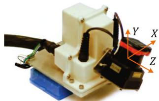
Fig. 2 An example 3D lidar using in experiment evaluation. We will use data from this sensor to illustrate the method. The sensor consists of a Hokuyo laser scanner driven by a motor for rotational motion, and an encoder that measures the rotation angle. The laser scanner has 180◦ field of view and 0.25◦ resolution. The scanning rate is 40 lines/s. The motor is controlled to rotate from 90◦ to 90◦ with the horizontal orientation of the laser scanner as zero
With assumptions and notations made, our lidar odometry and mapping problem can be defined as
Problem Given a sequence of lidar cloud compute ego-motion of the lidar in the world, , and build a map with for the traversed environment.
4 System overview
4.1 Lidar hardware
The study of this paper is validated on four sensor systems: a back-and-forth spin lidar, a continuously-spinning lidar, a Velodyne HDL-32 lidar, and the sensor system used by the KITTI benchmark Geiger et al. (2012, 2013). We use the first lidar hardware as an example to illustrate the method, therefore we introduce the lidar hardware in the front of the paper to help readers understand the method. The rest sensors will be introduced in the experiment section. As shown in Fig. 2, the lidar is based on a Hokuyo UTM-30LX laser scanner which has field of view with resolution and 40 lines/s scanning rate. The laser scanner is connected to a motor controlled to rotate at 180◦/s angular speed between 90 and with the horizontal orientation of the laser scanner as zero. With this particular unit, a sweep is a rotation from 90 to or in the inverse direction (lasting for 1 s). Here, note that for a continuously-spinning lidar, a sweep is simply a semispherical or a full-spherical rotation. An onboard encoder measures the motor rotation angle with 0.25◦ resolution, with which, the laser points are back-projected into the lidar coordinates, L .
4.2 Software system overview
Figure 3 shows a diagram of the software system. Let be the points received in a laser scan. During each sweep, is registered in L . The combined point cloud during sweep k forms . Then, is processed in two algorithms. Lidar odometry takes the point cloud and computes the motion of the lidar between two consecutive sweeps. The estimated motion is used to correct distortion in . The algorithm runs at a frequency around 10 Hz. The outputs are further processed by lidar mapping, which matches and registers the undistorted cloud onto a map at a frequency of 1 Hz. Finally, the pose transforms published by the two algorithms are integrated to generate a transform output around 10 Hz, regarding the lidar pose with respect to the map. Sections 5 and 6 present the blocks in the software diagram in detail.
5 Lidar odometry
5.1 Feature point extraction
We start with extraction of feature points from the lidar cloud, . We notice that many 3D lidars naturally generate unevenly distributed points in . With the lidar in Fig. 2 as an example, the returns from the laser scanner has a resolution of within a scan. These points are located on a scan plane. However, as the laser scanner rotates at an angular speed of 180◦/s and generates scans at 40Hz, the resolution in the perpendicular direction to the scan planes is . Considering this fact, the feature points are extracted from using only information from individual scans, with co-planar geometric relationship.
We select feature points that are on sharp edges and planar surface patches. Let i be a point in , and let be the set of consecutive points of i returned by the laser scanner in the same scan. Since the laser scanner generates point returns in CW or CCW order, contains half of its points on each side of i and intervals between two points (still with the lidar in Fig. 2 as an example). Define a term to evaluate the smoothness of the local surface,
The term is normalized w.r.t. the distance to the lidar center. This is particularly made to remove scale effect and the term can be used for both near and far points.
The points in a scan are sorted based on the c values, then feature points are selected with the maximum namely, edge points, and the minimum , namely planar points. To evenly distribute the feature points within the environment, we separate a scan into four identical subregions. Each subregion can provide maximally 2 edge points and 4 planar points. A point i can be selected as an edge or a planar point only if its c value is larger or smaller than a threshold , and the number of selected points does not exceed the maximum point number of a subregion.
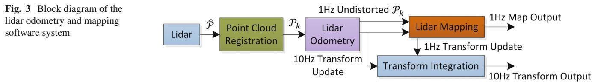
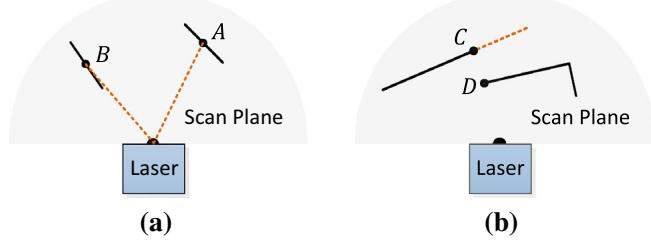
Fig. 4 a The solid line segments represent local surface patches. Point A is on a surface patch that has an angle to the laser beam (the dotted orange line segments). Point B is on a surface patch that is roughly parallel to the laser beam. We treat B as a unreliable laser return and do not select it as a feature point. b The solid line segments are observable objects to the laser. Point C is on the boundary of an occluded region (the dotted orange line segment), and can be detected as an edge point. However, if viewed from a different angle, the occluded region can change and become observable. We do not treat D as a salient edge point or select it as a feature point (Color figure online)
While selecting feature points, we want to avoid points whose surrounded points are selected, or points on local planar surfaces that are roughly parallel to the laser beams (point B in Fig. 4a). These points are usually considered as unreliable. Also, we want to avoid points that are on boundary of occluded regions (Li and Olson 2011). An example is shown in Fig. 4b. Point C is an edge point in the lidar cloud because its connected surface (the dotted line segment) is blocked by another object. However, if the lidar moves to another point of view, the occluded region can change and become observable. To avoid the aforementioned points to be selected, we find again the set of points . A point i can be selected only if does not form a surface patch whose normal is within to the laser beam, and there is no point in that is disconnected from i by a gap in the direction of the laser beam and is at the same time closer to the lidar then point i (e.g. point B in Fig. 4b).
In summary, the feature points are selected as edge points starting from the maximum c value, and planar points starting from the minimum c value, and if a point is selected,
• The number of selected edge points or planar points cannot exceed the maximum of the subregion, and
None of its surrounding point is already selected, and
It cannot be on a surface patch whose normal is within 10◦ to the laser beam, or on boundary of an occluded region.
An example of extracted feature points from a corridor scene is shown in Fig. 5. The edge points and planar points are labeled in yellow and red colors, respectively.

Fig. 5 An example of extracted edge points (yellow) and planar points (red) from lidar cloud taken in a corridor. Meanwhile, the lidar moves toward the wall on the left side of the figure at a speed of 0.5 m/s, this results in motion distortion on the wall (Color figure online)
5.2 Finding feature point correspondence
The odometry algorithm estimates motion of the lidar within a sweep. Let be the starting time of a sweep k. At the end of sweep , the point cloud perceived during the sweep, , is projected to time stamp , illustrated in Fig. 6 (we will discuss transforms projecting the points in Sect. 5.3). We denote the projected point cloud as . During the next sweep is used together with the newly received point cloud, to estimate the motion of the lidar.
Let us assume that both and are available for now, and start with finding correspondences between the two lidar clouds. With , we find edge points and planar points from the lidar cloud using the methodology discussed in the last section. Let and be the sets of edge points and planar points, respectively. We will find edge lines from as correspondences of the points in , and planar patches as correspondences of those in
Note that at the beginning of sweep is an empty set, which grows during the course of the sweep as more points are received. Lidar odometry recursively estimates the 6-DOF motion during the sweep, and gradually includes more points as increases. and are projected to the beginning of the sweep (again, we will discuss transforms projecting the points later). Let and be the projected point sets. For each point in and , we are going to find the closest neighbor point in . Here, is stored in a 3D KD-tree (Berg et al. 2008) in for fast index.
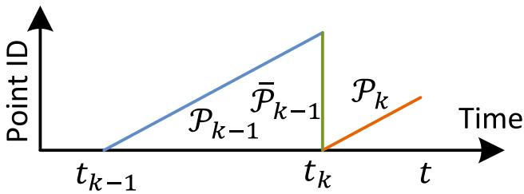
Fig. 6 Project point cloud to the end of a sweep. The blue colored line segment represents the point cloud perceived during sweep the end of sweep is projected to time stamp to obtain (the green colored line segment). Then, during sweep and the newly perceived point cloud (the orange colored line segment) are used together to estimate the lidar motion (Color figure online)

Fig. 7 Finding an edge line as the correspondence for an edge point in , and a planar patch as the correspondence for a planar point in (b). In both (a, b), j is the closest point to the feature point i, found in . The orange lines represent the same scan of j, and the blue lines are the preceding and following scans. To find the edge line correspondence in a, we find another point, l, on the blue lines, and the correspondence is represented as . To find the planar patch correspondence in b, we find another two points, l and m, on the orange line and the blue line, respectively. The correspondence is (j, l, m) (Color figure online)
Figure 7a represents the procedure of finding an edge line as the correspondence of an edge point. Let i be a point in . The edge line is represented by two points. Let j be the closest neighbor of i in , and let l be the closest neighbor of i in the preceding and following two scans to the scan of forms the correspondence of i. Then, to verify both j and l are edge points, we check the smoothness of the local surface based on (1) and require that both points have . Here, we particularly require that j and l are from different scans considering that a single scan cannot contain more than one points from the same edge line. There is only one exception where the edge line is on the scan plane. If so, however, the edge line is degenerated and appears as a straight line on the scan plane, and feature points on the edge line should not be extracted in the first place.
Figure 7b shows the procedure of finding a planar patch as the correspondence of a planar point. Let i be a point in . The planar patch is represented by three points. Similar to the last paragraph, we find the closest neighbor of i in , denoted as j. Then, we find another two points, l and m, as the closest neighbors of i, one in the same scan of but not and the other in the preceding and following scans to the scan of j. This guarantees that the three points are non-collinear. To verify that and m are all planar points, again, we check the smoothness of the local surface and require
With the correspondences of the feature points found, now we derive expressions to compute the distance from a feature point to its correspondence. We will recover the lidar motion by minimizing the overall distances of the feature points in the next section. We start with edge points. For a point if is the corresponding edge line, , the point to line distance can be computed as
where , and are the coordinates of points , and l in , respectively. Then, for a point , if (j, l, m) is the corresponding planar patch, , the point to plane distance is
5.3 Motion estimation
The lidar motion is modeled with constant angular and linear velocities during a sweep. This allows us to linear interpolate the pose transform within a sweep for the points that are received at different times. Let t be the current time stamp, and recall tha is the starting time ofthe current sweep k. Let be the lidar pose transform between contains 6-DOF motion of the lidar, where is the translation and is the rotation in . Given , the corresponding rotation matrix can be defined by the Rodrigues formula (Murray and Sastry 1994),
where is the skew symmetric matrix of
Given a point , let be its time stamp, and let be the pose transform between can be computed by linear interpolation of ),
Here, note that is a changing variable over time and the interpolation uses the transform of current time t. Recall that and are the sets of edge points and planar points
extracted from . The following equation helps project and to the beginning of the sweep, namely and
where is a point in or and is the corresponding point in or and are the rotation matrix and translation vector corresponding to
Recall that (2) and (3) compute the distances between points in and and their correspondences. Combining (2) and (6), we can derive a geometric relationship between an edge point in and the corresponding edge line,
Similarly, combining (3) and (6), we can establish another geometric relationship between a planar point in and the corresponding planar patch,
Finally, we solve the lidar motion with the Levenberg-Marquardt method (Hartley and Zisserman 2004). Stacking (7) and (8) for each feature point in and , we obtain a nonlinear function,
where each row of f corresponds to a feature point, and d contains the corresponding distances. We compute the Jacobian matrix of f with respect to , denoted as J, where . Then, (9) can be solved through nonlinear iterations by minimizing d toward zero,
λ is a factor determined by the Levenberg-Marquardt method.
5.4 Lidar odometry algorithm
Lidar odometry algorithm is shown in Algorithm 1. The algorithm takes as inputs the point cloud from the last sweep, , the growing point cloud of the current sweep, , and the pose transform from the last recursion as initial guess, . If a new sweep is started, is set to zero to re-initialize (line 4–6). Then, the algorithm extracts feature points from to construct and on line 7. For each feature point, we find its correspondence in (line 9–19). The motion estimation is adapted to a robust fitting framework (Andersen 2008). On line 15, the algorithm assigns a bisquare weight for each feature point as the following equation. The feature points that have larger distances to their correspondences are assigned with smaller weights, and the feature points with distances larger than a threshold are considered as outliers and assigned with zero weights.
Algorithm 1: Lidar Odometry
1 input : from the last recursion at initial guess
2 output : , newly computed
3 begin
4 if at the beginning of a sweep then
5
6 end
7 Detect edge points and planar points in , put the points in
and , respectively;
8 for a number of iterations do
9 for each edge point in do
10 Find an edge line as the correspondence, then
compute point to line distance based on (7) and stack
the equation to (9);
11 end
12 for each planar point in do
13 Find a planar patch as the correspondence, then
compute point to plane distance based on (8) and
stack the equation to (9);
14 end
15 Compute a bisquare weight for each row of (9);
16 Update for a nonlinear iteration based on (10);
17 if the nonlinear optimization converges then
18 Break;
19 end
20 end
21 if at the end of a sweep then
22 Project each point in to and form
23 Return and
24 end
25 else
26 Return
27 end
28 end
where
In the above equation, is the corresponding residual in the least square problem, is the absolute deviation of the residuals from the median, and h is the leverage value or the corresponding element on the diagonal of matrix where J is the same Jacobian matrix used in (10). Then, on line 16, the pose transform is updated for one iteration. The nonlinear optimization terminates if convergence is found, or the maximum iteration number is met. If the algorithm reaches the end of a sweep, is projected to time stamp using the estimated motion during the sweep, forming . This makes ready for the next sweep to be matched to . Otherwise, only the transform is returned by the algorithm for the next round of recursion.
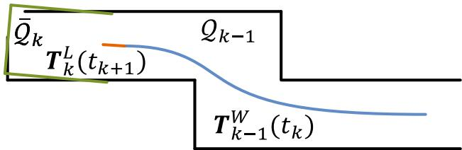
Fig. 8 Illustration of mapping process. The blue curve represents the lidar pose on the map, , generated by the mapping algorithm at sweep . The orange curve indicates the lidar motion during the entire sweep , computed by the odometry algorithm. With and , the undistorted point cloud published by the odometry algorithm is projected onto the map, denoted as (the green line segments), and matched with the existing cloud on the map, (the black colored line segments) (Color figure online)
6 Lidar mapping
The mapping algorithm runs at a lower frequency then the odometry algorithm, and is called only once per sweep. At the end of sweep k, lidar odometry generates a undistorted point cloud, , and simultaneously a pose transform, , containing the lidar motion during the sweep, between . The mapping algorithm matches and registers in the world coordinates, W , illustrated in Fig. 8. To explain the procedure, let us define as the point cloud on the map, accumulated until sweep , and let be the pose of the lidar on the map at the end of sweep . With the output from lidar odometry, the mapping algorithm extents for one sweep from to , to obtain , and transforms into the world coordinates, W , denoted as . Next, the algorithm matches with by optimizing the lidar pose
The feature points are extracted in the same way as in Sect. 5.1, but 10 times of feature points are used. To find correspondences for the feature points, we store the point cloud on the map, , in 10 m cubic areas. The points in the cubes that intersect with are extracted and stored in a 3D KD-tree (Berg et al. 2008) in W . We find the points in within a certain region (10 cm 10 cm 10 cm) around the feature points. Let be a set of surrounding points. For an edge point, we only keep points on edge lines in , and for a planar point, we only keep points on planar patches. The points are distinguished between edge points and planar points based on their values. Here, we use the same threshold as in Sect. 5.1. Then, we compute the covariance matrix of , denoted as M, and the eigenvalues and eigenvectors of M, denoted as V and E, respectively. These values determine poses of the point clusters and hence the point-to-line and point-to-plane distances. Specifically, if is distributed on an edge line, V contains one eigenvalue significantly larger than the other two, and the eigenvector in E associated with the largest eigenvalue represents the orientation of the edge line. On the other hand, if is distributed on a planar patch, V contains two large eigenvalues with the third one significantly smaller, and the eigenvector in E associated with the smallest eigenvalue denotes the orientation of the planar patch. The position of the edge line or the planar patch is calculated such that the line or the plane passes through the centroid of
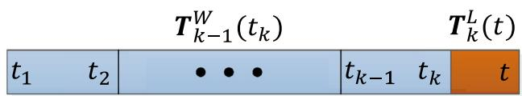
Fig. 9 Integration of pose transforms. The blue colored region illustrates the lidar pose from the mapping algorithm, , generated once per sweep. The orange colored region is the lidar motion within the current sweep, , computed by the odometry algorithm. The motion estimation of the lidar is the combination of the two transforms, at the same frequency as (Color figure online)
To compute the distance from a feature point to its correspondence, we select two points on an edge line, and three points on a planar patch. This allows the distances to be computed using the same formulations as (2) and (3). Then, an equation is derived for each feature point as (7) or (8), but different in that all points in share the same time stamp, The nonlinear optimization is solved again by the Levenberg-Marquardt method (Hartley and Zisserman 2004) adapted to robust fitting (Andersen 2008), and then is registered on the map.
To evenly distribute the points, the map cloud is downsized by voxel-grid filters (Rusu and Cousins 2011) each time a new scan is merged with the map. The voxel-grid filters average all points in each voxel, leaving an averaged point in the voxel. Edge points and planar points use different voxel sizes. With edge points, the voxel size is 5 cm 5 cm 5 cm. With planar points, it is 10 cm×10 cm×10 cm. The map is truncated in a 500 m 500 m 500 m region surrounding the sensor to limit the memory usage.
Integration of the pose transforms is illustrated in Fig. 9. The blue colored region represents the pose output from lidar mapping, , generated once per sweep. The orange colored region represents the transform output from lidar odometry, , at a frequency round 10Hz. The lidar pose with respect to the map is the combination of the two transforms, at the same frequency as lidar odometry.
7 Experiments
During experiments, the algorithms processing the lidar data run on a laptop computer with 2.5 GHz quad cores and 6Gib memory, on top of the robot operating system (ROS) (Quigley et al. 2009) in Linux. The method consumes a total of two threads, the odometry and mapping programs run on two separate threads.
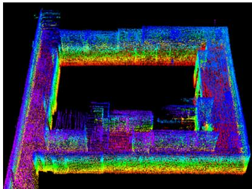
(a)
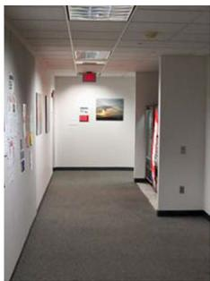
(b)
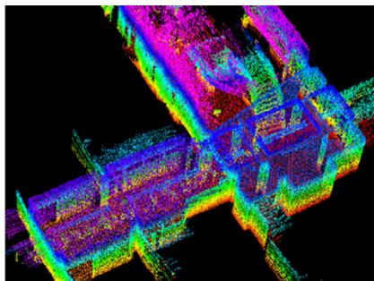
(c)
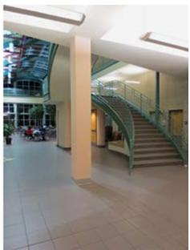
(d)
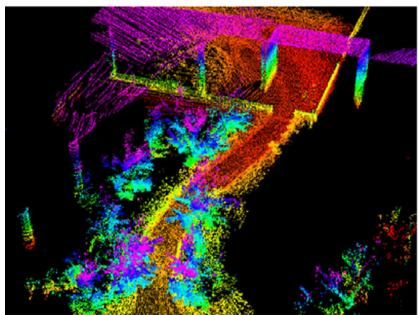
(e)
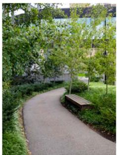
(f)
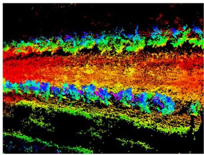
(g)
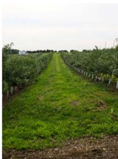
(h)
Fig. 10 Maps generated in a, b a narrow and long corridor, c, d a large lobby, e, f a vegetated road, and g, h an orchard between two rows of trees. The lidar is placed on a cart in indoor tests, and mounted on a ground vehicle in outdoor tests. All tests use a speed of 0.5m/s
7.1 Accuracy tests
The method has been tested in indoor and outdoor environments using the lidar in Fig. 2. During indoor tests, the lidar is placed on a cart together with a battery and a laptop computer. One person pushes the cart and walks. Figure 10a, c show maps built in two representative indoor environments, a narrow and long corridor and a large lobby. Figure 10b, d show two photos taken from the same scenes. In outdoor tests, the lidar is mounted to the front of a ground vehicle. Figrue 10e, g show maps generated from a vegetated road and an orchard between two rows of trees, and photos are presented in Fig. 10f, h, respectively. During all tests, the lidar moves at a speed of 0.5 m/s.
To evaluate local accuracy of the maps, we collect a second set of lidar clouds from the same environments. The lidar is kept stationary and placed at a few different places in each environment during data selection. The two point clouds are matched and compared using the point to plane ICP method (Rusinkiewicz and Levoy 2001). After matching is complete, the distances between one point cloud and the corresponding planar patches in the second point cloud are considered as matching errors. Figure 11 shows the density of error distributions. It indicates smaller matching errors in indoor environments than in outdoor. The result is reasonable because feature matching in natural environments is less exact than in manufactured environments.
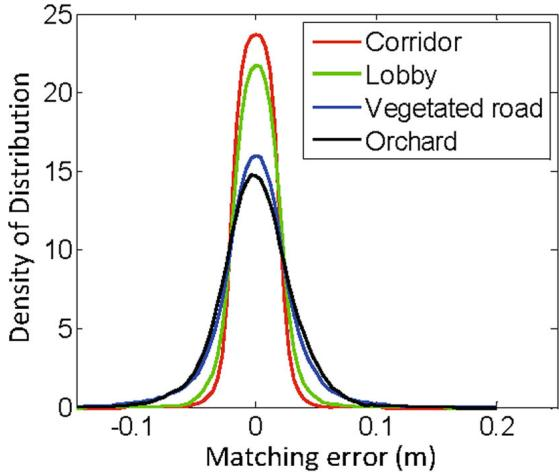
Fig. 11 Matching errors for corridor (red), lobby (green), vegetated road (blue) and orchard (black), corresponding to the four scenes in Fig. 10 (Color figure online)
Further, we want to understand how lidar odometry and lidar mapping function and contribute to the final accuracy. To this end, we take the dataset in Fig. 1 and show output of each algorithm. The trajectory is 32m in length. Figure 12a uses lidar odometry output to register laser points directly, while Fig. 12b is the final output optimized by lidar mapping. As we mention at the beginning, the role of lidar odometry is to estimate velocity and remove motion distortion in point clouds. The low-fidelity of lidar odometry cannot warrant accurate mapping. On the other hand, lidar mapping further performs careful scan matching to warrant accuracy on the map. Table 1 shows computation time brake-down of the two programs in the accuracy tests. We see lidar mapping takes totally 6.4 times of computation of lidar odometry to remove drift. Here, note that lidar odometry is called 10 times while lidar mapping is called once, resulting in same level of computation load on the two threads.

(a)
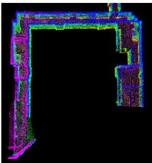
(b)
Fig. 12 Comparison between a lidar odometry output and b final lidar mapping output with the dataset in Fig. 1. The role of lidar odometry is to estimate velocity and remove motion distortion in point clouds. This algorithm has a low fidelity. Lidar mapping further performs careful scan matching to warrant accuracy on the map
Additionally, we conduct tests to measure accumulated drift of the motion estimate. We choose corridor for indoor experiments that contains a closed loop. This allows us to start and finish at the same place. The motion estimation generates a gap between the starting and finishing positions, which indicates the amount ofdrift. For outdoor experiments, we choose orchard environment. The ground vehicle that carries the lidar is equipped with a high accuracy GPS/INS for ground truth acquisition. The measured drifts are compared to the distance traveled as the relative accuracy, and listed in Table 2. Specifically, Test 1 uses the same datasets with Fig. 10a, g. In general, the indoor tests have a relative accuracy around 1 % and the outdoor tests are around 2.5 %.
7.2 Tests with IMU assistance
We attach an Xsens MTi-10 IMU to the lidar to deal with fast velocity changes. The point cloud is pre-processed in two ways before sending to the proposed method, (1) with orientation from the IMU, the point cloud received in one sweep is rotated to align with the initial orientation of the lidar in that sweep, (2) with acceleration measurement, the motion distortion is partially removed as if the lidar moves at a constant velocity during the sweep. Here, the IMU orientation is obtained by integrating angular rates from gyros and readings from accelerometers in a Kalman filter (Thrun et al. 2005). After IMU pre-processing, the motion left to solve is the orientation drift from the IMU, assumed to be linear within a sweep, and the linear velocity. Hence, it satisfies the assumption that the lidar has linear motion within a sweep. The point cloud is then processed by the lidar odometry and mapping programs.
Table 1 Computation break-down for accuracy tests
| Program | Build | Match | Others (ms) Total (ms) | |
| KD-tree (ms) | Features (ms) | |||
| Odometry | 11 | 23 | 14 | 48 |
| Mapping | 58 | 134 | 117 | 309 |
Table 2 Relative errors for motion estimation drift
| Environment | Test 1 | Test 2 | ||
| Distance (m) | Error (%) | Distance (m) | Error (%) | |
| Corridor | 58 | 0.9 | 46 | 1.1 |
| Orchard | 52 | 2.3 | 67 | 2.8 |
Figure 13a shows a sample result. A person holds the lidar and walks on a staircase. When computing the red curve, we use orientation provided by the IMU, and our method only estimates translation. The orientation drifts over 25◦ during 5 mins of data collection. The green curve relies only on the optimization in our method, assuming no IMU is available. The blue curve uses the IMU data for preprocessing followed by the proposed method. We observe small difference between the green and blue curves. Figure 13b presents the map corresponding to the blue curve. In Fig. 13c, we compare two closed views of the maps in the yellow rectangular in Fig. 13b. The upper and lower figures correspond to the blue and green curves, respectively. Careful comparison finds that the edges in the upper figure are sharper than those in the lower figure.
Table 3 compares relative errors in motion estimation with and without using the IMU. The lidar is held by a person walking at a speed of 0.5 m/s and moving the lidar up and down at a magnitude around 0.5 m. The ground truth is manually measured by a tape ruler. In all four tests, using the proposed method with assistance from the IMU gives the highest accuracy, while using orientation from the IMU only leads to the lowest accuracy. The results indicate that the IMU is effective in canceling the nonlinear motion, with which, the proposed method handles the linear motion.
7.3 Tests with micro-helicopter datasets
We further evaluate the method with data collected from an octo-rotor micro aerial vehicle. As shown in Fig. 14, the helicopter is mounted with a 2-axis lidar, which shares the same design with the one in Fig. 2 except that the laser scanner spins continuously. For such a lidar unit, a sweep is defined as a semi-spherical rotation on the slow axis, lasting for one second. A Microstrain 3DM-GX3-45 IMU is also mounted on the helicopter. The odometry and mapping programs process both lidar and IMU data.
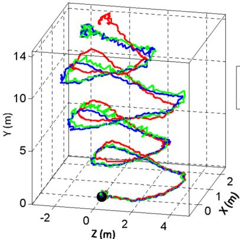
-IMU Our Method Our Method+IMU
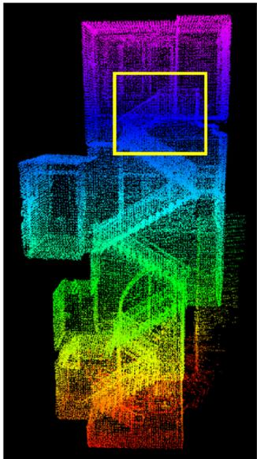
(b)
(a)
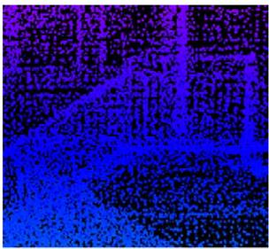
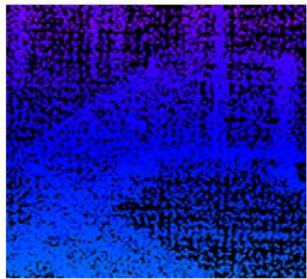
(c)
Fig. 13 Comparison of results with/without aiding from an IMU. A person holds the lidar and walks on a staircase. The black dot is the starting point. In a, the red curve is computed using orientation from the IMU and translation estimated by our method, the green curve relies on the optimization in our method only, and the blue curve uses the IMU data for preprocessing followed by the method. b is the map corresponding to the blue curve. In c, the upper and lower figures correspond to the blue and green curves, respectively, using the region labeled by the yellow rectangle in b. The edges in the upper figure are sharper, indicating more accuracy on the map (Color figure online)
Table 3 Motion estimation errors with/without using IMU
| Environment | Distance (m) | Error | ||
| IMU (%) | Ours (%) | Ours+IMU (%) | ||
| Corridor | 32 | 16.7 | 2.1 | 0.9 |
| Lobby | 27 | 11.7 | 1.7 | 1.3 |
| Vegetated road | 43 | 13.7 | 4.4 | 2.6 |
| Orchard | 51 | 11.4 | 3.7 | 2.1 |
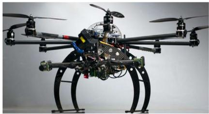
(a)
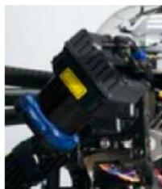
(b)
Fig. 14 a Octo-rotor helicopter used in the study. A 2-axis lidar is mounted to the font of the helicopter with a zoomed in view in b. The lidar is based on a Hokuyo laser scanner, sharing the same design with the one in Fig. 2 except the laser scanner spins continuously
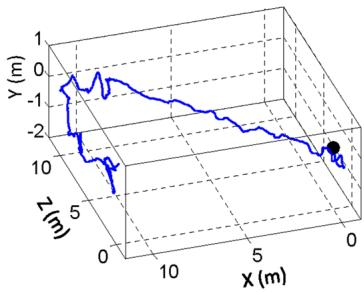
(a)
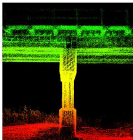
(b)
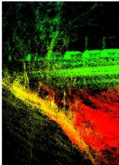
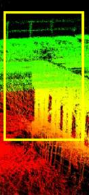
(c)
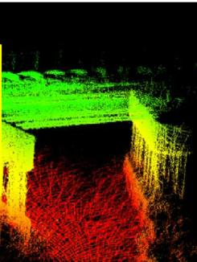
Fig. 15 Results from a small bridge. a shows trajectory of the helicopter. The black dot is the starting position. b, c show the map built by the proposed method, where b is a zoomed in view of the area inside the yellow rectangle in c. The helicopter is manually flown during data collection. Starting from one side, it flies underneath the bridge, turns back, and flies underneath the bridge again (Color figure online)
We show results from two datasets in Figs. 15 and 16. For both tests, the helicopter is manually flown at a speed of 1 m/s. In Fig. 15, the helicopter starts from one side of the bridge, flies underneath the bridge and turns back to fly underneath the bridge for the second time. In Fig. 16, the helicopter starts with taking-off from the ground and ends with landing back on the ground. In Figs. 15a and 16a, we show trajectories of the flights, and in Figs. 15b and 16b, we show zoomed in views of the maps, corresponding to the areas inside the yellow rectangles in Figs. 15c and 16c. We are not able to acquire ground truth for the helicopter poses or the maps. For relative small environments as in both tests, the method continuously re-localizes on the maps built at the beginning of the tests. Hence, calculating loop closure errors becomes meaningless. Instead, we can only visually exam accuracy of the maps in the zoomed in views.
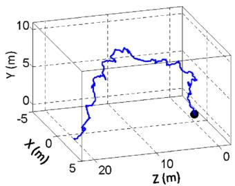
(a)
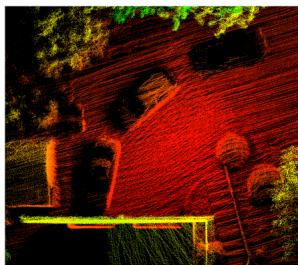
(b)
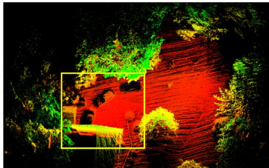
(c)
Fig. 16 Results from the front of a house. a shows trajectory of the helicopter. The black dot is the starting position. b, c show the map built by the proposed method, where b is a zoomed in view of the area inside the yellow rectangle in c. The helicopter is manually flown, starting with taking-off from the ground and ending with landing on the ground (Color figure online)
7.4 Tests with a Velodyne lidar
These experiments use a Velodyne HDL-32E lidar mounted on two vehicles shown in Fig. 17. Figure 17a is a utility vehicle driven on sidewalks and off-road terrains. Figure 17b is a passenger vehicle driven on streets. For both vehicles, the lidar is mounted high on the top to avoid possible occlusions by the vehicle body.
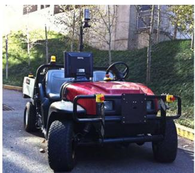
(a)
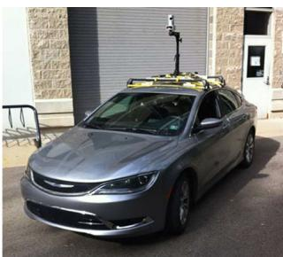
(b)
Fig. 17 Vehicles carrying a Velodyne HDL-32E lidar for data logging. a is a utility vehicle driven on sidewalks and off-road terrains. b is a passenger vehicle driven on streets
The Velodyne HDL-32E is a single-axis laser scanner. It projects 32 laser beams simultaneously into the 3D environment. We treat each plane formed by a laser beam as a scan plane. A sweep is defined as a full-circle rotation of the laser scanner. The lidar acquires scans at 10 Hz by default. We configure lidar odometry to run at 10 Hz processing individual scans. Lidar mapping stacks scans for a second to do the batch optimization. The computation brake-down for the two programs is shown in Table 4.
Figure 18 shows results of mapping the university campus. The data is logged with the vehicle in Fig. 17a for 1.0 km
Table 4 Computation break-down for Velodyne HDL-32E tests
| Program | Build | Match | Others (ms) Total (ms) | |
| KD-tree (ms) | Features (ms) | |||
| Odometry | 18 | 35 | 16 | 69 |
| Mapping | 131 | 283 | 149 | 563 |
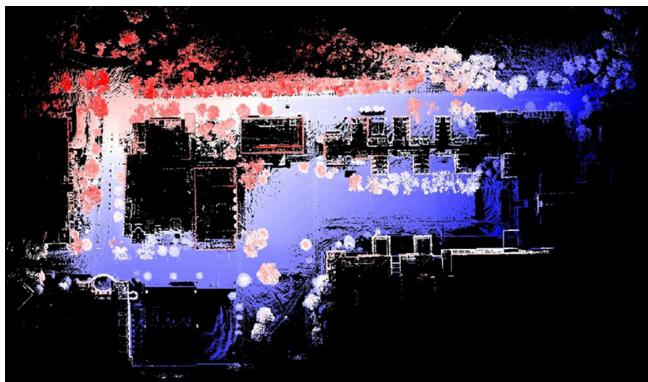
(a)
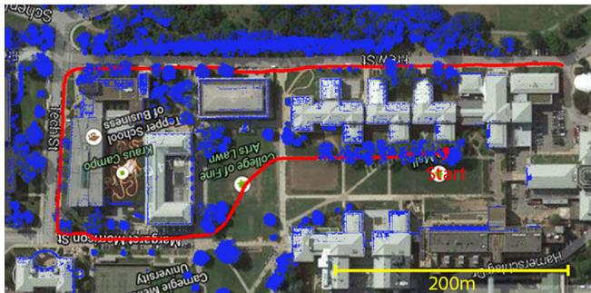
(b)
Fig. 18 Results of mapping university campus. The overall run is 1.0 km and the vehicle speed is at 2–3 m/s. a shows the final map built and b shows the trajectory and registered laser points overlaid on a satellite image. The horizontal position error from matching with the satellite image is 1m
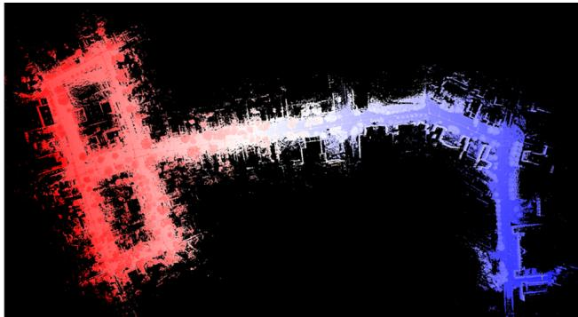
(a)
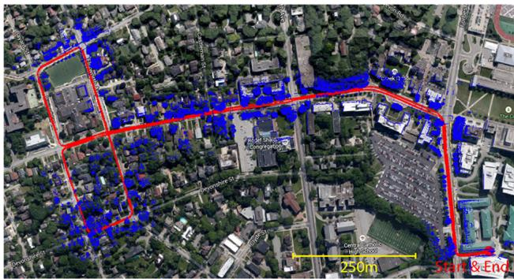
(b)
Fig. 19 Results ofmapping streets. The path is 3.6 km in length and the vehicle speed is at 11–18 m/s. The figures are in the same arrangement with Fig. 18. The horizontal position error from matching with the satellite image is 2m
of travel. The driving speed during the test is maintained at 2–3 m/s. Figure 18a shows the final map built. Figure 18b shows the estimated trajectory (red curve) and the registered laser points overlaid on a satellite image. By matching the trajectory to the sidewalk (the vehicle is not driven on the street) and the laser points to the building walls, we determine the horizontal position drift is ≤1 m. By comparison of mapped buildings from both sides, we are able to determine the vertical drift to be 1.5 m. This results in the overall position error to be 0.2 % of the distance traveled.
Figure 19 shows results from another test. We drive the vehicle in Fig. 17b on streets for 3.6 km. Except waiting for traffic lights, the vehicle speed is mostly between 11– 18 m/s. The figures in Fig. 19 are organized in the same way as Fig. 18. By comparison with the satellite image, we determine the horizontal position error is 2m. For vertical accuracy, however, we are not able to evaluate.
7.5 Tests with KITTI datasets
Finally, we test the method using the KITTI odometry benchmark (Geiger et al. 2012, 2013). The datasets are logged with sensors mounted on top of a passenger vehicle in road driving scenarios. As shown in Fig. 20, the vehicle is equipped with color stereo cameras, monochrome stereo cameras, a Velodyne HDL-64E laser scanner, and a high accuracy GPS/INS for ground truth. The laser data is logged at 10 Hz and used by the method for motion estimation. To reach the maximum accuracy possible, the scan data is processed in a slightly different way than in Sect. 7.4. Instead of stacking 10 scans from lidar odometry, lidar mapping runs at the same frequency as lidar odometry and processes each individual scan. This results in the system running at 10 % of the real-time speed, taking one second to process a scan.
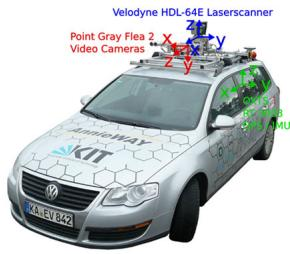
(a)
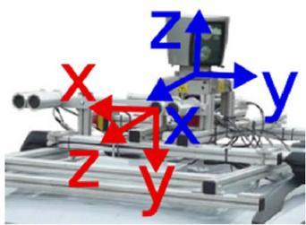
(b)
Fig. 20 a Vehicle used by the KITTI benchmark for data logging. The vehicle is mounted with a Velodyne lidar, stereo cameras, and a high accuracy GPS/INS for ground truth acquisition. Our method uses data from the Velodyne lidar. b Zoomed in view of the sensors. Images taken from http://www.cvlibs.net/datasets/kitti/
The datasets contain 11 tests with the GPS/INS ground truth provided. The maximum driving speed in the datasets reaches 85 km/h (23.6 m/s). The data covers mainly three types of environments: “urban“ with buildings around, “country” on small roads with vegetations in the scene, and “highway” where roads are wide and the vehicle speed is fast. Figure 21 presents sample results from the three environments. On the top row, we show estimated trajectories of the vehicle compared to the GPS/INS ground truth. On the middle and bottom rows, the map and a corresponding image is shown from each dataset. The maps are color coded by elevation. The complete test results with the 11 datasets are listed in Table 5. The three tests from left to right in Fig. 21 are datasets 0, 3, and 1 in the table. Here, the accuracy is calculated by averaging relative position errors using segmented trajectories at 100, 200, . . . , 800 m lengthes, based on 3D coordinates.
Our resulting accuracy is ranked #2 on the KITTI odometry benchmark1 irrespective of sensing modality, with an average of 0.88 % position error compared to the distance traveled. The results outperform the state of the art visionbased methods (stereo visual odometry methods) (Persson et al. 2015; Badino and Kanade 2011, 2013; Lu et al. 2013; Bellavia et al. 2013 for over 14 % in position error and 24 % in orientation error. In fact, the method is also partially used by the #1 ranked method which runs visual odometry for motion estimation and the proposed method for motion refinement (Zhang and Singh 2015). We think laser-based state estimation is superior than vision-based methods due to the capability of lidars in measuring far points. The lidar range errors are relatively constant w.r.t. the distance measured, and points far away from the vehicle ensure orientation accuracy during scan matching.
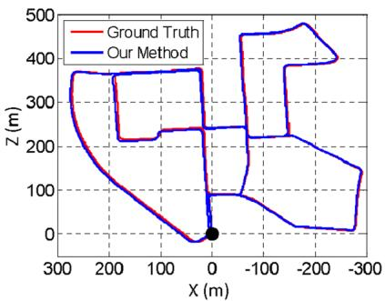
(a)
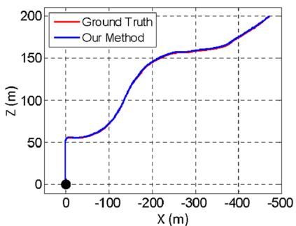
(b)
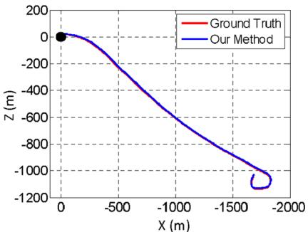
(c)
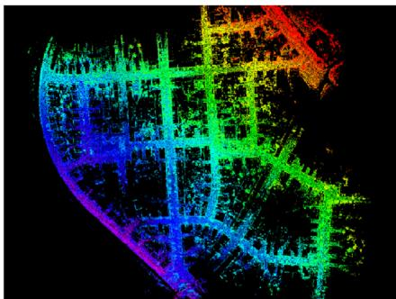
(d)
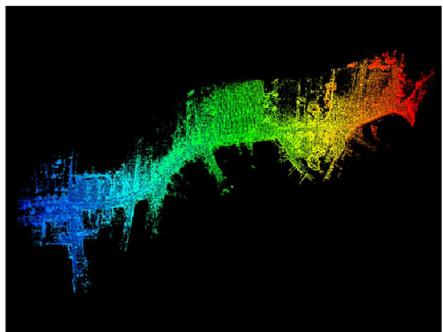
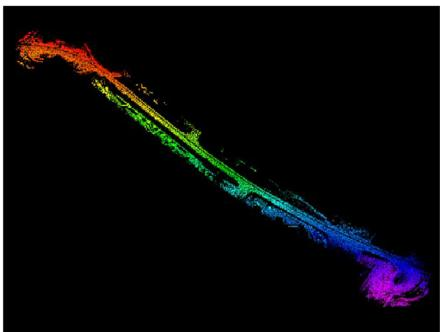
(f)
(e)
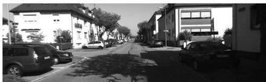
(g)
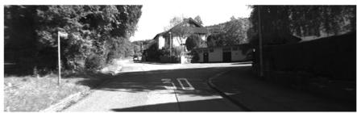
(h)
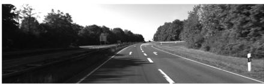
(i)
Fig. 21 Sample results using the KITTI benchmark datasets. The datasets are chosen from three types of environments: urban, country, and highway from left to right, corresponding to tests number 0, 3, and 1 in Table 5. In a–c, we compare estimated trajectories of the vehicle
Table 5 Configurations and results of the KITTI benchmark datasets
| Data no. | Configuration | Mean relative position error (%) | |
| Distance (m) | Environment | ||
| 0 | 3714 | Urban | 0.78 |
| 1 | 4268 | Highway | 1.43 |
| 2 | 5075 | Urban + Country | 0.92 |
| 3 | 563 | Country | 0.86 |
| 4 | 397 | Country | 0.71 |
| 5 | 2223 | Urban | 0.57 |
| 6 | 1239 | Urban | 0.65 |
| 7 | 695 | Urban | 0.63 |
| 8 | 3225 | 1.12 | |
| 9 | 1717 | 0.77 | |
| 10 | 919 | 0.79 | |
The errors are measured using segments of trajectories at 100, 200, . . . , 800 m lengthes based on 3D coordinates, as averaged percentages of the segment lengthes
to the GPS/INS ground truth. The black dots are starting positions. d–f show maps corresponding to a–c, color coded by elevation. An image is shown from each dataset to illustrate the environment, in g–i
8 Discussion
When building a complex system, one question is which components in the system function as the keys to ensure the performance. Our first answer is the dual-layer data processing structure. This allows us to break down the state estimation problem into two problems that are much easier to solve. Lidar odometry only cares about velocity of the sensor and motion distortion removal. The velocity estimates from lidar odometry are not precise (see Fig. 12a) but are good enough to de-wrap point clouds. After which, lidar mapping only needs to consider rigid body transform for precise scan matching.
Hartley, R., & Zisserman, A. (2004). Multiple view geometry in computer vision. New York: Cambridge University Press.
Our implementation of geometrical feature detection and matching is a means to realize online and real-time processing. Particularly in lidar odometry, matching does not have to be very precise but high-frequency is more important for point cloud de-wrapping. The implementation takes processing speed as its priority. However, if sufficient amount of computation is available, e.g. with GPU acceleration, the implementation is less necessary.
We do have the choice of choosing the frequency ratio between lidar odometry and lidar mapping. Setting the ratio to be 10 is our preference (lidar mapping is an order ofmagnitude slower than lidar odometry). This means lidar mapping stacks 10 scan outputs from lidar odometry for one time of batch optimization. Setting the ratio to be higher will typically cause more drift. Also, each time lidar mapping finishes processing, ajump will be introduced to the motion estimates. The ratio is able to keep the motion estimates to be smooth. On the other hand, setting the ratio to be lower will cause more computation and is usually not necessary. The ratio also balances computation load on the two CPU threads. Changing the ratio will put more computation load on one thread than the other.
9 Conclusion and future work
Motion estimation and mapping using point clouds from a rotating laser scanner can be difficult because the problem involves recovery of motion and correction of motion distortion in lidar clouds. The proposed method divides and solves the problem by two algorithms running in parallel. Cooperation of the two algorithms allows accurate motion estimation and mapping to be realized in real-time. The method has been tested in a large number of experiments covering various types ofenvironments, using author collected data as well as datasets from the KITTI odometry benchmark. Since the current method does not recognize loop closure, our future work involves developing a method to correct motion estimation drift by closing the loop.
Acknowledgements The paper is based upon work supported by the National Science Foundation under Grant No. IIS-1328930. Special thanks are given to D. Huber, S. Scherer, M. Bergerman, M. Kaess, L. Yoder, S. Maeta for their insightful inputs and invaluable help.
References
Andersen, R. (2008). Modern methods for robust regression. Sage University Paper Series on Quantitative Applications in the Social Sciences.
Anderson, S. & Barfoot, T. (2013). Towards relative continuoustime SLAM. In IEEE International Conference on Robotics and Automation (ICRA), Karlsruhe, Germany.
Anderson, S., & Barfoot, T. (2013). RANSAC for motion-distorted 3D visual sensors. In 2013 IEEE/RSJ International Conference on Intelligent Robots and Systems (IROS), Tokyo, Japan.
Badino, H., & Kanade, T. (2011). A head-wearable short-baseline stereo system for the simultaneous estimation of structure and motion. In IAPR Conference on Machine Vision Application, Nara, Japan.
Badino, A.Y.H., & Kanade, T. (2013). Visual odometry by multiframe feature integration. In Workshop on Computer Vision for Autonomous Driving (Collocated with ICCV 2013). Sydney, Australia.
Bay, H., Ess, A., Tuytelaars, T., & Gool, L. (2008). SURF: Speeded up robust features. Computer Vision and Image Understanding, 110(3), 346–359.
Bellavia, F., Fanfani, M., Pazzaglia, F., & Colombo, C. (2013). Robust selective stereo slam without loop closure and bundle adjustment. Lecture Notes in Computer Science, 8156, 462–471.
Bosse, M., & and Zlot, R. (2009). Continuous 3D scan-matching with a spinning 2D laser. In IEEE International Conference on Robotics and Automation, Kobe, Japan.
Bosse, M., Zlot, R., & Flick, P. (2012). Zebedee: Design of a springmounted 3-D range sensor with application to mobile mapping. IEEE Transactions on Robotics, 28(5), 1104–1119.
de Berg, M., van Kreveld, M., Overmars, M., & Schwarzkopf, O. (2008). Computation geometry: Algorithms and applications (3rd ed.). Berlin: Springer.
Dong, H. & Barfoot, T. (2012). Lighting-invariant visual odometry using lidar intensity imagery and pose interpolation. In The 7th International Conference on Field and Service Robots, Matsushima, Japan.
Furgale, P., Barfoot, T. & Sibley, G. (2012). Continuous-time batch estimation using temporal basis functions. In IEEE International Conference on Robotics and Automation (ICRA), St. Paul, MN.
Geiger, A., Lenz, P. & Urtasun, R. (2012). Are we ready for autonomous driving? The kitti vision benchmark suite. In IEEE Conference on Computer Vision and Pattern Recognition (CVPR) (pp. 3354– 3361).
Geiger, A., Lenz, P., Stiller, C., & Urtasun, R. (2013). Vision meets robotics: The KITTI dataset. International Journal of Robotics Research, 32, 1229–1235.
Guo, C.X., Kottas, D.G., DuToit, R.C., Ahmed, A., Li, R. & Roumeliotis, S.I. (2014). Efficient visual-inertial navigation using a rolling-shutter camera with inaccurate timestamps. In Proceedings ofRobotics: Science and Systems, Berkeley, CA.
Hong, S., Ko, H. & Kim, J. (2010). VICP: Velocity updating iterative closest point algorithm. In IEEE International Conference on Robotics and Automation (ICRA), Anchorage, Alaska.
Li, Y. & Olson, E. (2011) Structure tensors for general purpose LIDAR feature extraction. In IEEE International Conference on Robotics and Automation, Shanghai, China, May 9–13.
Li, M., & Mourikis, A. (2014). Vision-aided inertial navigation with rolling-shutter cameras. International Journal of Robotics Research, 33(11), 1490–1507.
Lu, W., Xiang, Z., & Liu, J. (2013). High-performance visual odometry with two-stage local binocular ba and gpu. In IEEE Intelligent Vehicles Symposium. Gold Coast City, Australia.
Moosmann, F., & Stiller, C. (2011). Velodyne SLAM. In IEEE Intelligent Vehicles Symposium (IV). Baden-Baden, Germany.
Murray, R., & Sastry, S. (1994). A mathematical introduction to robotic manipulaton. Boca Raton: CRC Press.
Nuchter, A., Lingemann, K., Hertzberg, J., & Surmann, H. (2007). 6D SLAM-3D mapping outdoor environments. Journal of Field Robotics, 24(8–9), 699–722.
Persson, M., Piccini, T., Mester, R., & Felsberg, M. (2015). Robust stereo visual odometry from monocular techniques. In IEEE Intelligent Vehicles Symposium. Seoul, Korea.
Pomerleau, F., Colas, F., Siegwart, R., & Magnenat, S. (2013). Comparing ICP variants on real-world data sets. Autonomous Robots, 34(3), 133–148.
Quigley, M., Gerkey, B., Conley, K., Faust, J., Foote, T., Leibs, J., et al. (2009). ROS: An open-source robot operating system. In Workshop on Open Source Software (Collocated with ICRA 2009). Kobe, Japan.
Rosen, D., Huang, G., & Leonard, J. (2014). Inference over heterogeneous finite-/infinite-dimensional systems using factor graphs and Gaussian processes. In IEEE International Conference on Robotics and Automation (ICRA), Hong Kong, China.
Rusinkiewicz, S. & Levoy, M. (2001). Efficient variants of the ICP algorithm. In Third International Conference on 3D Digital Imaging and Modeling (3DIM), Quebec City, Canada.
Rusu, R.B., & Cousins, S. (2011). 3D is here: Point Cloud Library (PCL). In IEEE International Conference on Robotics and Automation (ICRA), Shanghai, China, May 9–13.
Scherer, S., Rehder, J., Achar, S., Cover, H., Chambers, A., Nuske, S., et al. (2012). River mapping from a flying robot: State estimation, river detection, and obstacle mapping. Autonomous Robots, 32(5), 1–26.
Thrun, S., Burgard, W., & Fox, D. (2005). Probabilistic robotics. Cambridge, MA: The MIT Press.
Tong, C. H. & Barfoot, T. (2013). Gaussian process Gauss-Newton for 3D laser-based visual odometry. In IEEE International Conference on Robotics and Automation (ICRA), Karlsruhe, Germany.
Tong, C., Furgale, P., & Barfoot, T. (2013). Gaussian process Gaussnewton for non-parametric simultaneous localization and mapping. International Journal ofRobotics Research, 32(5), 507–525.
Zhang, J. & Singh, S. (2014). LOAM: Lidar odometry and mapping in real-time. In Robotics: Science and Systems Conference (RSS), Berkeley, CA.
Zhang, J. & Singh, S. (2015). Visual-lidar odometry and mapping: Low-drift, robust, and fast. In IEEE International Conference on Robotics and Automation (ICRA), Seattle, WA, May
Zlot, R. & Bosse, M. (2012). Efficient large-scale 3D mobile mapping and surface reconstruction of an underground mine. In The 7th International Conference on Field and Service Robots, Matsushima, Japan.
Ji Zhang is a Ph.D. candidate at the Robotics Institute of Carnegie Mellon University. His research interest is focused on robot navigation, perception and localization, lidar mapping, and computer vision.
Sanjiv Singh is a Research Professor at the Robotics Institute with a courtesy appointment in Mechanical Engineering. He is the founding editor of the Journal of Field Robotics. His research relates to the operation of robots in natural and in some cases, extreme environments. His recent work has two main themes: perception in natural and dynamic environments and multi-agent coordination. Currently, he leads efforts in collision avoidance for air vehi-
cles (near earth and between aircraft) and ground vehicles using novel sensors that can look through obscurants. Another research area seeks to provide accurate tracking and situational awareness in dynamic environments, such as those encountered in search and rescue, using radio signals to compute location. This research seeks to assist emergency response personnel in their operations.
md/2017_LOAM-Journal.md 预渲染生成。公式以 MathML 呈现，浏览器原生渲染，不依赖外部脚本或字体 CDN。